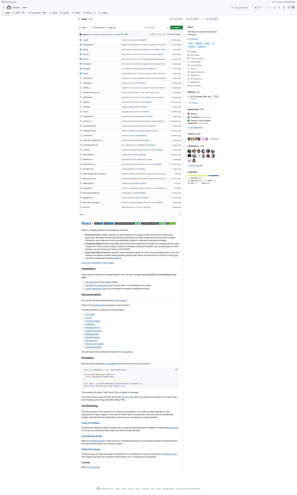
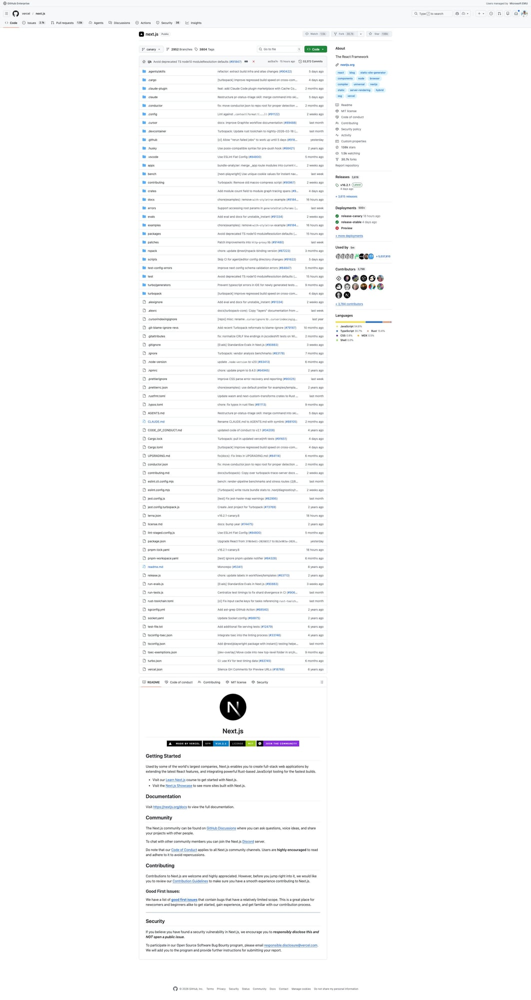
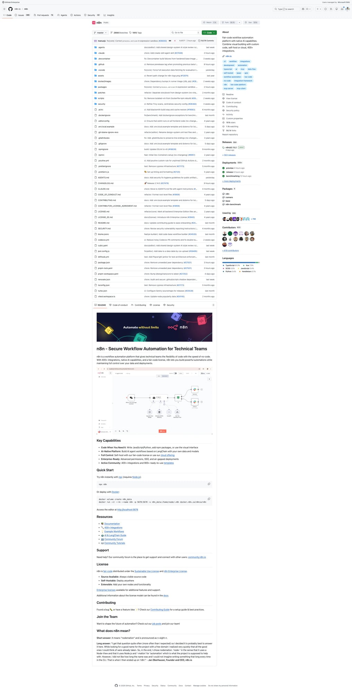
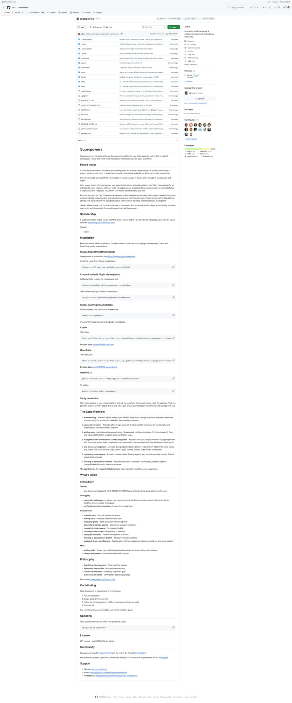
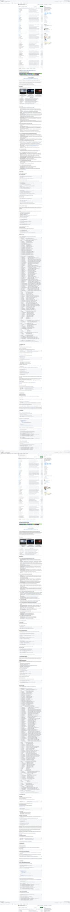

5个Agent Skills新星速报！React错误处理、Next.js Feature Flags、MCP Server模式
Neo整理
Agent Skills 是 AI 编程助手（Claude Code、Codex、Gemini CLI 等）的可复用能力模块。今天我扫描了 SkillsMP 的 Development 和 Data & AI 分类，筛选出来自知名开源项目、实用价值高的热门 Skills。
本期介绍 5 个精选 Skills，涵盖 React 开发、Next.js 框架、自动化工作流、多 Agent 协作和 MCP Server 构建。
Extract Errors：React 错误码管理指南
Extract Errors Skill 是 Facebook React 团队的内部开发规范。当你向 React 添加新错误消息，或者看到"unknown error code"警告时，这个 Skill 会自动激活，指导你正确管理 React 的错误码体系。
💡 核心价值：React 使用编号错误码系统来优化生产环境包大小。每条新增的错误消息都需要通过 yarn extract-errors 分配唯一编号，确保用户在生产环境看到的错误链接能正确指向完整说明。
使用场景：
- 新增错误信息 — 添加
throw new Error()后运行提取命令 - 错误码过期 — 检查现有错误码是否与代码同步
- 调试生产错误 — 根据编号定位完整错误描述
# 提取新错误码
yarn extract-errors
# 报告需要分配编号的新错误
# 检查错误码是否与代码同步
Flags：Next.js 实验性功能开关全流程
Flags Skill 是 Vercel Next.js 团队的内部指南，覆盖了添加或修改实验性 Feature Flag 的端到端流程。从类型声明到 Zod Schema，从构建注入到运行时环境变量，一站式搞定。
💡 核心价值：Next.js 的 Feature Flag 系统涉及 config-shared.ts、config-schema.ts、define-env-plugin.ts、next-server.ts 等多个文件。这个 Skill 帮你理清每个 Flag 需要修改哪些文件，避免遗漏。
关键概念：
- 必要配线 —
config-shared.ts（类型）→config-schema.ts（Zod） - 客户端/打包代码 — 通过
define-env.ts构建时注入 - 预编译运行时包 — 需要在
next-server.ts设置真实环境变量 - 独立 Bundle 变体 — 最多 16 种组合（turbo/webpack × experimental/stable × dev/prod）
# Flag 路径选择
客户端代码 → define-env.ts 即可
预编译包 → 需要运行时环境变量
├─ 方案 A: 运行时 env var（简单，包体积大）
└─ 方案 B: 独立 Bundle 变体（复杂，消除死代码）
# 相关 Skills
- $dce-edge — DCE-safe require 模式
- $react-vendoring — React 供应层边界
- $runtime-debug — 复现验证工作流
n8n Conventions：自动化工作流开发速查卡
n8n Conventions Skill 是 n8n 自动化平台的开发速查卡。n8n 是开源的 Zapier/Make 替代品，拥有 800+ 集成。这个 Skill 汇总了核心开发规范和最佳实践，让 AI 编程助手正确地帮你编写 n8n 代码。
💡 核心价值：n8n 的代码库使用严格的 TypeScript 规范（禁用 any）、Vue 3 Composition API 前端、依赖注入后端。一张速查卡避免踩坑。
关键规则：
- TypeScript — 禁
any用unknown，优先satisfies而非as - 错误处理 — 用
UnexpectedError，废弃ApplicationError - 前端 — Vue 3 + Composition API + CSS 变量 + i18n
- 后端 — Controller → Service → Repository + DI
- 数据库 — 仅 SQLite / PostgreSQL
# 错误处理
import { UnexpectedError } from 'n8n-workflow';
throw new UnexpectedError('message', { extra: { context } });
# 测试
pushd packages/cli && pnpm test
# 构建（始终重定向输出）
pnpm build > build.log 2>&1
pnpm typecheck # 提交前
pnpm lint # 提交前
Dispatching Parallel Agents：多 Agent 并行协作
Dispatching Parallel Agents Skill 来自 Superpowers 项目——一个为 Claude Code 等编码 Agent 设计的最佳实践集合。当你面临 2 个以上独立任务时，这个 Skill 教你如何派发多个 Agent 并行工作，大幅提高效率。
💡 核心价值：核心原则是"每个独立问题域一个 Agent"。每个 Agent 获得精确构建的上下文，不继承父会话历史，避免上下文污染。
使用场景：
- 多测试文件失败 — 3+ 个测试文件不同根因，并行调查
- 多子系统故障 — 各子系统独立修复，互不干扰
- 不适用时 — 故障相关联、需共享状态、Agent 间会互相干扰
# 模式
1. 识别独立域
- File A: 工具审批流程
- File B: 批量完成行为
- File C: 中止功能
2. 创建聚焦任务（每个 Agent 获得）
- 精确的问题描述
- 相关代码上下文
- 明确的成功标准
3. 并行派发，汇总结果
MCP Server Patterns：构建 AI 工具服务器
MCP Server Patterns Skill 来自 Everything Claude Code 技能集——一个为 Claude Code 开发者打造的全方位技能库。MCP（Model Context Protocol）是让 AI 助手调用外部工具的标准协议，这个 Skill 教你如何构建 MCP 服务器。
💡 核心价值：MCP SDK API 频繁变动（tool() vs registerTool()），这个 Skill 提供稳定的架构指导，并提醒你始终查阅最新文档。
核心概念：
- Tools — AI 可调用的操作（搜索、运行命令等）
- Resources — 只读数据（文件内容、API 响应）
- Prompts — 可复用的参数化提示模板
- Transport — stdio（本地）vs Streamable HTTP（远程）
# 安装
npm install @modelcontextprotocol/sdk zod
# 服务器设置
import { McpServer } from "@modelcontextprotocol/sdk/server/mcp.js";
const server = new McpServer({
name: "my-server", version: "1.0.0"
});
# 最佳实践
- Schema 优先：每个工具定义输入 Schema
- 错误结构化：返回 AI 可理解的错误信息
- 幂等设计：工具操作可安全重试
- 传输分离：逻辑与传输解耦
总结
今天介绍的 5 个 Skills 涵盖了不同层面的开发需求：
- 框架内部规范 — React Extract Errors、Next.js Flags
- 项目开发规范 — n8n Conventions
- Agent 协作模式 — Dispatching Parallel Agents
- 基础设施构建 — MCP Server Patterns
值得注意的趋势：越来越多的知名开源项目（React、Next.js、n8n）开始在仓库中内置 Agent Skills，让 AI 编程助手"原生理解"项目架构和规范。同时，Superpowers 和 Everything Claude Code 这类"元技能"项目也在快速成长——它们不是为某个项目服务，而是教 Agent 如何更好地工作。